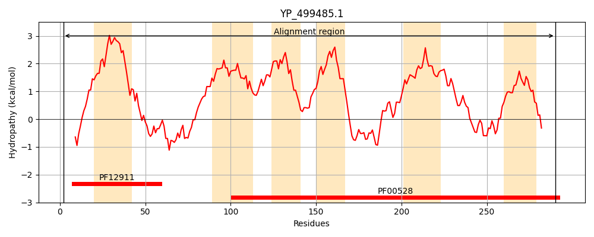
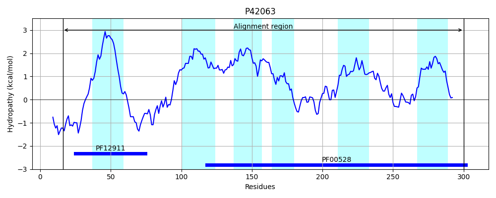
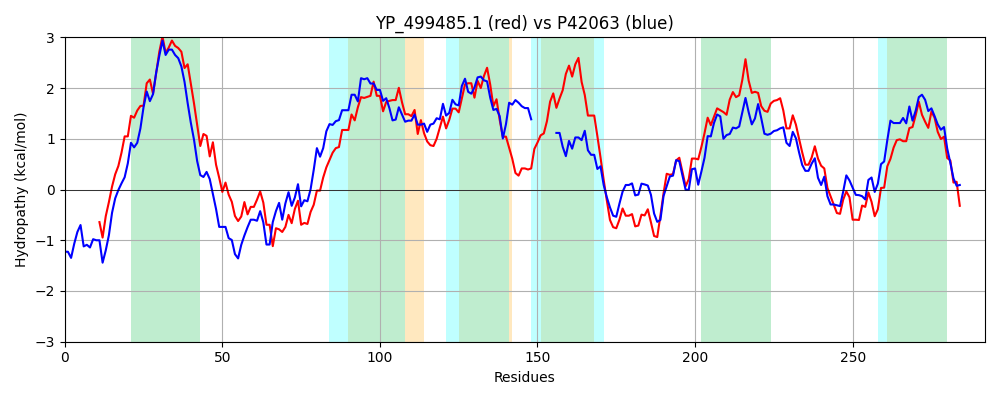

Hit Accession: P42063
Hit TCID: 3.A.1.5.20
Hit Description: gnl|BL_ORD_ID|10435 gnl|TC-DB|P42063|3.A.1.5.20 Oligopeptide transport system permease protein appC - Bacillus subtilis.
Mach Len: 292
e:0.000000
Query TMS Count : 6
Hit TMS Count: 6
TMS-Overlap Score: 5.600000
Predicted Substrates:CHEBI:7755;oligopeptide
BLAST Alignment:
Score: 615 , Bit scores: 241 bits, E-value: 5.5e-79, Alignment length: 292, Percentage identity: 43
Query: 2 QNKSKSP---FKIAFSKFIHNKIAMLSVIFLLIITIVSIIAPLIAPFPVNQQDLLNIKGEMTAQNILGTDSGGRDNFSRLLYAGRISLSIGITSTIGMLLIGITVGVISGYFGGIVDTLLMRITEFVMLFPFLIFAIVLNAALGDKIKNPYGSAIILVLVIIVLSWGGIARLVRGKVLQEKENEYFLAAKSIGTPTYKIILKHLLPNILSVVIVQATLLFAGMIVVESGLSFLGFGISKAIPSWGNMLSDAQEGDVISGKPWIWMPPAIMITLTILSINFVGEGIKDAFNPR 290
+N SK P KI + KF NK+A+L + L II + ++ APLIAP+P QQ LL+ ++++GTD GRD FSR+LY R+SL +G S +G +LIG +G ++GYF GIVD ++MR+ + V+ P + I L + L+L+ + W ARLVRG+ L + EY LAAK+IGT T+KII H+LPN L +IV ATL +I+ ES LS+LGFGI I SWGNML DAQ V+ W + P + I +T+L NFVG+G++DA +P+
Sbjct: 16 ENISKKPETMTKIFWEKFSKNKLAILGAVILFIIIMSAVFAPLIAPYPQEQQSLLDKYKAPGLEHLMGTDKFGRDIFSRILYGARVSLLVGFASVVGSILIGTVLGALAGYFRGIVDAVIMRVVDIVLSIPDIFLLITLVTIFKPGVDK-------LILIFCLTGWTTTARLVRGEFLSLRSREYVLAAKTIGTKTHKIIFSHILPNALGPIIVSATLKVGSVILAESALSYLGFGIQPPIASWGNMLQDAQNFTVMIQAWWYPLFPGLFILMTVLCFNFVGDGLRDALDPK 300 | Protein Hydropathy Plots: |
|---|
|  |  |
Pairwise Alignment-Hydropathy Plot:
|
|---|
|  |